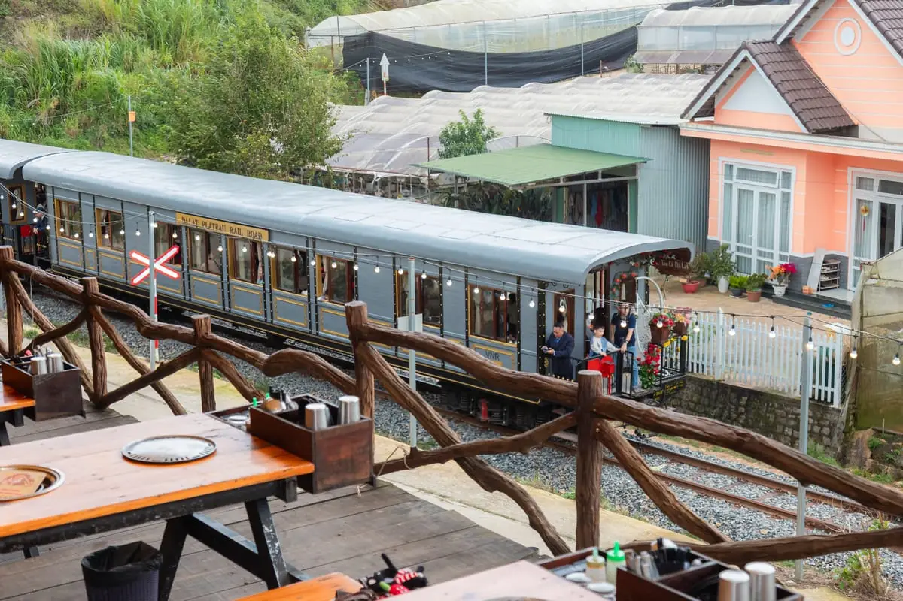

★★★★★
"Đầu tiên nói về phục vụ, dù quán rất đông khách, nhưng nhân viên cực kỳ chu đáo. Cái bò phô mai siêu ngon, recommend mọi người lần đầu tiên đến thì nên gọi 🫣"

Tàu lửa cổ chạy ngay trên đường tàu dưới chân quán · Mẹo săn tàu thành công · BBQ tươi mỗi ngày
Vì ở Trạm Dừng Chill, tàu cổ tuyến Đà Lạt – Trại Mát chạy ngay dưới lan can quán: "săn tàu" là canh đúng giờ để ngắm và quay đoàn tàu chạy ngang, trong khung tàu chạy qua quán 16:30 – 21:25. Quán có hơn một chỗ ngắm: dãy lan can ngoài trời kê sát đường ray là chỗ thấy tàu gần nhất; dãy lan can mái che phía trên nhìn được cả hoàng hôn lẫn thung lũng nhà lồng. Xem ảnh không gian ở trang chủ tiệm nướng Trạm Dừng Chill.
Đoàn tàu lửa cổ kính từ ga Đà Lạt - Trại Mát chạy ngay dưới quán. Tiếng còi tàu vang giữa bữa nướng — không gian thật sự khác biệt.
Từ khoảng 16:30, hoàng hôn buông xuống thung lũng cũng là lúc tàu bắt đầu chạy qua quán. Đến quán khung 16:00 là kịp chọn bàn, đón trọn cả hoàng hôn vàng lẫn đoàn tàu cổ trong cùng một buổi.
Khung giờ tàu chạy qua quán kéo dài tới 21:25, nên ngồi lại buổi tối vẫn có thể thấy đoàn tàu đèn vàng lướt qua biển sao nhà lồng Đà Lạt — view rất ít quán có được.
Bàn ngắm tàu được thiết kế view 180° — không bỏ lỡ một khoảnh khắc nào của đoàn tàu.
Nhân viên báo trước khi tàu sắp đến — bạn kịp lấy điện thoại quay video viral cho chính mình.
Ngoài view xịn, đồ ăn cũng ngon. Bò tảng phô mai trứng muối — món signature, ai cũng phải gọi.
Cùng một khúc đường tàu dưới chân quán, bốn khung giờ khác nhau — từ xế chiều tới lúc tàu sáng đèn chạy trong đêm.


Ảnh chụp tại 111 Huỳnh Tấn Phát, Phường Xuân Trường — quán nằm ngay trên tuyến đường tàu Đà Lạt – Trại Mát. Muốn ngồi dãy sát đường ray thì đặt bàn trước và ghi chú “muốn view tàu lửa”.
Không phải ai đến cũng thấy tàu — ba bước này giúp bạn dễ gặp tàu nhất
Khung giờ tàu bắt đầu từ 16:30 — đến sớm để chọn được bàn view đẹp, không bị che. Khung 17:30–19:00 quán thường kín khách nên không nhận đặt bàn mới — bạn chọn sớm hơn hoặc từ 19:30 trở đi.
Quán đông, đặt bàn trước qua Zalo để được giữ vị trí view xe lửa đẹp nhất.
Bạn sẽ quay rất nhiều video — sạc đầy hoặc mang theo sạc dự phòng. Quán có ổ điện free.
🚧 An toàn khi săn tàu: đây là tuyến đường sắt đang chạy tàu thật. Hãy ngắm và quay chụp từ bàn ngồi hoặc sau lan can của quán — đừng bước xuống đường ray hay đứng sát mép ray lúc tàu tới, và giữ trẻ nhỏ ở chỗ ngồi.
Tàu lửa cổ tuyến Đà Lạt – Trại Mát chạy qua Trạm Dừng Chill trong khung 16:30 – 21:25.
⚠️ Khung 17:30–19:00 quán thường kín khách, không nhận đặt bàn mới. Bạn vui lòng chọn khung sớm hơn hoặc từ 19:30 trở đi.
95.000đ – 300.000đ/người
Đã gồm VAT — nhóm 4 người nhân lên là khoảng 380.000đ – 1.200.000đ.
Quán gọi món lẻ, không bán combo hay set cố định — bạn trả đúng phần mình gọi.
Cần hỏi thêm, gọi hoặc nhắn Zalo 0989.765.070 — Trạm mở cửa 15:00 – 23:00 tất cả các ngày.
"Đầu tiên nói về phục vụ, dù quán rất đông khách, nhưng nhân viên cực kỳ chu đáo. Cái bò phô mai siêu ngon, recommend mọi người lần đầu tiên đến thì nên gọi 🫣"
"Mình ăn nhiều quán ở Xóm Lèo rồi nhưng đánh giá quán này vẫn là OK nhất. Đồ ăn ngon, giá hợp lý, nhân viên nhiệt tình."
"Quán có không gian rộng rãi, view đẹp, các bạn nhân viên phục vụ chu đáo, nhiệt tình. Đồ ăn ngon, ra món nhanh."
Đặt bàn trước để được chọn vị trí view xe lửa đẹp nhất
Tàu lửa cổ tuyến Đà Lạt – Trại Mát chạy qua khu Huỳnh Tấn Phát trong khung 16:30 – 21:25. Hoàng hôn cũng bắt đầu từ khoảng 16:30, nên đến trước giờ đó là đón được cả hai.
Trạm Dừng Chill — 111 Huỳnh Tấn Phát, Phường Xuân Trường, Đà Lạt, Lâm Đồng. Quán nằm ngay trên đường tàu tuyến Đà Lạt – Trại Mát, tàu lửa cổ chạy ngang dưới chân quán, bạn vừa nướng BBQ tại bàn vừa ngắm tàu và nghe còi tàu.
Dãy lan can ngoài trời kê sát đường ray là chỗ thấy tàu lửa gần nhất. Dãy lan can có mái che phía trên nhìn được cả hoàng hôn lẫn thung lũng nhà lồng, đổi lại tàu ở xa hơn một chút. Bàn sát đường tàu có giới hạn nên khi đặt bàn bạn ghi chú “muốn view tàu lửa”, quán giữ chỗ theo thứ tự đặt trước.
Đến quán trước giờ tàu khoảng 30 phút (khung giờ tàu bắt đầu từ 16:30, nên có mặt khoảng 16:00) và đặt bàn trước để chọn vị trí không bị che. Khung 17:30–19:00 quán thường kín khách nên không nhận đặt bàn mới.
Được. Quán có khu mái che rộng vẫn nhìn ra thung lũng và đường ray, nên mưa vẫn ngắm tàu và ăn nướng bình thường. Khi mưa quán phát áo mưa miễn phí; trời lạnh có mền và lò than sưởi ấm.
Quán ở 111 Huỳnh Tấn Phát, Phường Xuân Trường, Đà Lạt, Lâm Đồng, cách trung tâm Đà Lạt khoảng 7 km, đi xe khoảng 20 phút theo hướng Trại Mát. Có bãi đỗ miễn phí cho xe máy và ô tô con; giờ cao điểm cuối tuần có thể phải đỗ xa hơn khoảng 100–200m. Grab và taxi vào được tận nơi.
Từ 95.000đ – 300.000đ một người, đã gồm VAT. Nhóm 4 người nhân lên là khoảng 380.000đ – 1.200.000đ. Bàn view không phụ thu. Quán mở 15:00 – 23:00 tất cả các ngày, kể cả cuối tuần và lễ. Quán nhận tiền mặt và chuyển khoản ngân hàng.